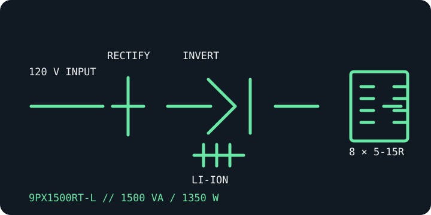

[ ONLINE DOUBLE-CONVERSION UPS // IDENTIFIED MODEL ]
Eaton 9PX1500RT-L
The lithium-ion RT-L version of Eaton's North American 9PX1500: a distinct SKU from the sealed lead-acid 9PX1500RT, with 1500 VA / 1350 W output and a 120 V nominal platform.

ARCHIVAL IDENTIFICATION: Keep the -L suffix visible in labels and maintenance records. Lithium-ion and lead-acid 9PX battery packs/accessories are chemistry-specific, not presumed interchangeable.
Exact model specifications
| Catalog category / topology | Online UPS — double-conversion, sine-wave output. |
|---|---|
| Electrical ratings | 1500 VA / 1350 W; 120 V nominal, with documented selectable North American output settings. Verify the setting and unit nameplate. |
| Transfer behavior | 0 ms inverter transfer in normal online operation. Bypass transfer is a distinct mode; consult the model guide for its conditions. |
| Receptacles / connectors | Eight NEMA 5-15R output receptacles; NEMA 5-15P input for the North American RT-L SKU. |
| Battery / runtime | Hot-swappable lithium-ion battery system; compatible lithium-ion external battery modules are model-specific options. Eaton's published chart reports approximately 11.2 minutes at 1350 W and 28 minutes at 675 W with the internal battery; actual runtime varies with condition, charge, temperature and configuration. |
| Communication | LCD, USB and serial interfaces with a Mini-Slot for compatible optional management cards. Confirm the installed card/software and host OS. |
| Compatibility / safety | Check load watts, configured voltage and 5-15R plug fit before connection. Use only the RT-L battery accessories specified by Eaton; do not substitute standard RT lead-acid packs. Follow lithium battery transport, service and disposal instructions. |
Manufacturer references
- Eaton — 9PX1500RT-L product/SKU pageManufacturer page for the lithium-ion North American model.
- Eaton — 9PX lithium-ion technical specificationsManufacturer battery, rating and runtime technical data for the lithium-ion 9PX range.
- Eaton — 9PX1500RT-L runtime toolManufacturer load-dependent runtime reference.